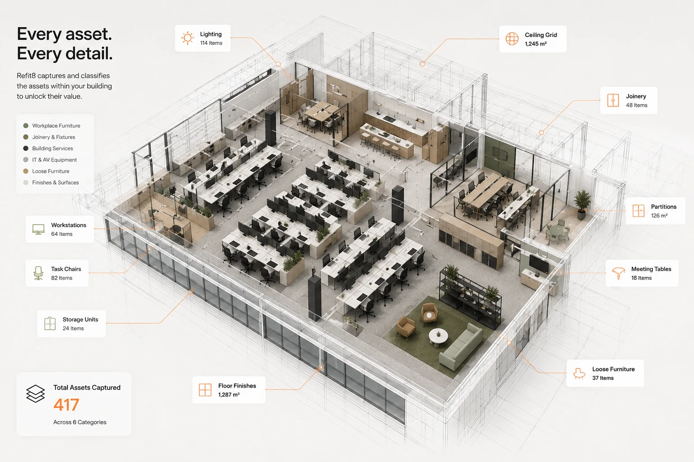

Asset Detail
◈
Select any asset from the register to view its audit notes, pathway instructions, and partner details.
Digital infrastructure for auditable, circular fitouts.
A trusted, interactive record of built form, services and FF&E assets, traceable across the fitout lifecycle.

Sample imageAt Refit8, we envision a future where nothing in the built environment goes to waste — where every material is visible, every decision is informed, and every project begins with the data it needs to act responsibly. By bringing clarity to what already exists within buildings and fit-outs, we believe better outcomes follow for people, projects, and the planet.
📍 200 Roma Street, Brisbane City QLD 4000
This platform provides structured access to asset and built-form data, with insights on quantities, material composition, and sustainable pathways to guide reuse, recycling, and responsible decision-making.

Use the navigation bar at the top of the screen or the cards below to explore the portal.
Questions about the audit, the data, or extending Refit8 to another project — the team will come back to you.
This opens a pre-written email in your mail app, ready to send to the Refit8 team.
This report has been prepared by Refit8 for the specific site, project and purpose identified within the document. It is intended to support project planning, asset and material management, circularity, reuse, recovery and sustainability decision-making.
The audit is based on information collected through a physical walk-through of the site by Refit8 personnel using Refit8’s digital audit application, together with information made available by the client or relevant project stakeholders at the time of the assessment.
The audit may include furniture, fixtures and equipment (FF&E), elements of the built form, and an indicative assessment of building services. Unless expressly stated otherwise, the audit is visual and non-invasive. Refit8 does not undertake destructive investigation, engineering inspection, services testing, hazardous materials assessment, structural assessment or verification of concealed or inaccessible elements as part of a standard audit.
Where an audit is undertaken prior to fitout, refurbishment, strip-out or other project works, the report reflects the condition and information available at the time of inspection. Subsequent project works, design development, procurement decisions, contractor activities or changes to site conditions may affect the accuracy or relevance of the findings.
Asset quantities, materials, dimensions, weights, conditions and classifications may include estimates where direct measurement, product documentation or other verified information is unavailable. These estimates should be treated as indicative unless specifically identified as verified.
Pathways identified within the report may represent:
The status of each pathway should therefore be considered when interpreting the report.
Recommendations relating to retention, reuse, rehoming, repair, refurbishment, remanufacture, recycling, stewardship or disposal identify potential pathways rather than guaranteed outcomes. Their implementation may depend on subsequent inspection, contractor capability, logistics, programme requirements, product condition, regulatory requirements, market demand and other project-specific factors.
Where greenhouse gas emissions, embodied carbon or emissions reductions are reported, calculations are prepared using a GHG Protocol-aligned, emissions-factor-based methodology and the best available information at the time of assessment.
Calculations may rely on quantities recorded or estimated during the audit, material assumptions, published emissions factors, environmental product declarations, lifecycle datasets or other third-party sources.
Carbon calculations should therefore be understood as estimates subject to the assumptions, system boundaries, emissions factors and data quality stated or inherent in the methodology. Results may change where more detailed product, quantity or lifecycle information becomes available.
Unless expressly stated otherwise, Refit8’s carbon calculations are intended to support project decision-making and reporting and do not constitute independent verification, certification or assurance of a client’s greenhouse gas inventory or environmental claims.
This report should be read in conjunction with its stated scope, methodology, assumptions and any identified data limitations.
Refit8 does not warrant that every asset, material, building element or service present at the site has been identified. Items that were concealed, inaccessible, not visible during the site walk-through, outside the agreed audit scope or introduced or removed after the audit may not be represented.
This report does not constitute structural, engineering, building compliance, hazardous materials, environmental, legal, financial or regulatory certification unless such services are expressly included within the agreed scope and undertaken by an appropriately qualified professional.
The report has been prepared for the client and project identified within it. Any third party seeking to rely on the report should consider the purpose, scope, date, assumptions and limitations under which it was prepared.
How audited material flows out of Olympic and Paralympic Games Accommodation — each stream routed to the recovery partner best placed to handle it.
The advisory, design, and research partners overseeing the circular defit — no material flows through these organisations.
Live project performance measured against three leading frameworks. Figures update directly from the audited asset register; items marked New Fitout are assessed once the incoming fitout is specified.
Circular and Responsible
Materials & Resources credits
Materials Petal — Net Positive Waste